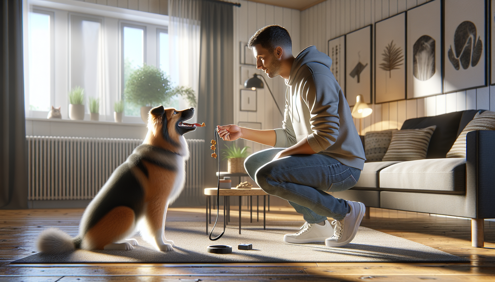

If you have ever thought, “I know my dog needs training, but I just do not have time,” you are not alone. Many dog owners imagine training as long, formal sessions that require perfect timing, endless patience, and a naturally obedient dog. In reality, the most effective dog training often happens in short, consistent bursts. A simple 15-minute daily routine can improve your dog’s focus, manners, confidence, and relationship with you more than an occasional hour-long session ever could.
This approach works for energetic puppies, newly adopted rescue dogs, and adult dogs who need a refresher. It is science-backed, practical, and easy to fit into real life. Dogs learn through repetition, clear communication, and reinforcement. When you train for a few minutes every day, you create predictable opportunities for learning without overwhelming your dog.
Below, you will find a complete 15-minute daily training routine that can transform almost any dog over time. The goal is not perfection in one day. The goal is steady progress, stronger communication, and a dog who understands how to succeed.
Short sessions are ideal for how dogs learn. Most dogs, especially puppies and rescue dogs adjusting to a new environment, have limited attention spans. Long sessions can lead to frustration, mental fatigue, and sloppy behavior. A focused 15-minute routine keeps training upbeat and productive.
There is also strong behavioral science behind this method. Dogs repeat behaviors that are reinforced. When you practice small skills daily and reward the behaviors you want, those behaviors become more likely to happen again. Frequent, low-stress repetition builds habits faster than inconsistent training marathons.
Daily training also strengthens your bond. Your dog learns that paying attention to you is rewarding, predictable, and safe. That emotional foundation matters just as much as obedience. A dog who feels secure and engaged learns faster and behaves better in everyday life.
You do not need a professional training facility to make this routine work. A few basic tools and the right mindset are enough. Keep your setup simple so you can stay consistent.
Choose rewards your dog truly loves. For some dogs, kibble is enough indoors. For others, especially puppies or rescue dogs working through stress, soft treats or tiny bits of chicken may be more motivating. Keep sessions positive. If your dog seems confused, reduce the difficulty instead of repeating cues louder or more often.
One important note: this routine is not about dominance, punishment, or forcing compliance. Modern dog training is most effective when it relies on clear cues, management, and positive reinforcement. You are teaching your dog what to do, not just correcting what not to do.
Here is the full routine. You can do it all at once or split it into two shorter sessions if needed. The structure stays the same: connect, engage, practice, settle.
Minutes 1-3: Connection and Focus
Start by helping your dog shift into training mode. Say your dog’s name once and reward eye contact. Take a few steps backward and reward your dog for following you. Ask for one easy behavior your dog already knows, such as sit, and reward success. The goal here is not difficulty. It is attention, engagement, and momentum.
Minutes 4-7: Core Skill Practice
Choose one or two foundational behaviors to practice. Good options include sit, down, stay, come, hand target, leave it, or leash walking position. Keep repetitions short and successful. Reward quickly. If your dog struggles, make the task easier by reducing distance, duration, or distraction.
Minutes 8-11: Real-Life Manners
This is where transformation happens. Practice behaviors your dog needs in daily life. Wait at the door before going out. Sit for the leash. Settle on a mat. Come when called from another room. Walk past food on the floor and choose to ignore it. These practical skills build impulse control and make your dog easier to live with.
Minutes 12-14: Enrichment and Confidence
Use one or two minutes for a confidence-building game. Toss a treat and let your dog find it. Practice stepping onto a mat, platform, or safe surface. Teach a fun trick like spin or touch. For shy rescue dogs, confidence work is especially valuable because learning in a safe, rewarding environment helps reduce anxiety.
Minute 15: Calm Finish
End every session with something easy and relaxing. Ask for a down on a mat, reward calm behavior, and then release your dog. This teaches your dog that training does not end in chaos. It ends in calm success.
You do not need to teach everything every day. In fact, rotating skills keeps training fresh and prevents mental overload. Think of your 15-minute routine as a framework, not a rigid script.
Here are excellent skills to cycle through during the week:
For puppies, keep expectations age-appropriate and focus on short wins. For rescue dogs, prioritize trust, predictability, and confidence before pushing advanced obedience. For adult dogs, use the routine to sharpen response speed and reliability in more distracting environments.
Even a great routine can stall if a few common mistakes creep in. The good news is that they are easy to fix once you notice them.
If your dog seems stuck, do not assume stubbornness. More often, the behavior has not been taught clearly enough, the environment is too distracting, or the reward is not motivating enough. Training is feedback. Adjust the setup, and your dog will often improve quickly.
This daily routine is effective because it meets dogs where they are. Puppies need structure, repetition, and help learning how to live in a human world. A short daily session teaches them to focus, settle, and respond to cues before bad habits become ingrained.
Rescue dogs often need something slightly different: safety and predictability. Many rescue adopters worry that training will feel like pressure. In fact, gentle, reward-based sessions can help a new dog feel more secure. Clear patterns reduce uncertainty, and success builds confidence.
Adult dogs benefit too. Dogs are lifelong learners. Even if your dog already knows the basics, 15 minutes a day can improve reliability, reduce unwanted behaviors, and add mental stimulation. Training is not just about obedience. It is a healthy way to meet your dog’s cognitive and emotional needs.
Many behavior issues improve when dogs get regular mental engagement. While training is not a cure-all for serious anxiety or aggression, it can reduce boredom, improve communication, and give you practical tools for everyday management. If your dog has significant behavior challenges, consider pairing this routine with support from a qualified positive reinforcement trainer or veterinary behavior professional.
With consistency, many owners notice small improvements within a week or two. Their dog checks in more often, responds faster, and seems more settled at home. Over several weeks, these tiny changes compound. Recall becomes stronger. Leash walking gets easier. Doorway manners improve. Your dog starts offering good behavior because that behavior has a long history of paying off.
The real transformation is not magic. It is habit formation. You are creating a dog who understands the rules, trusts the process, and has practiced making good choices every day. That is what lasting training looks like.
If you miss a day, do not give up. Just start again the next day. Consistency matters more than perfection. The owners who see the biggest changes are not always the most experienced. They are the ones who show up for a few minutes, every day, with clarity and kindness.
If you want a better-behaved dog, a more confident puppy, or a smoother transition with your rescue, do not underestimate the power of 15 focused minutes. A short daily training routine can transform your dog because it works with how dogs actually learn: through repetition, reinforcement, and relationship.
Start simple. Keep it positive. Reward generously. End on success. Over time, those 15 minutes become more than training. They become a daily conversation between you and your dog, one that builds trust, understanding, and lasting behavior change.
Get our full Dog Training eBook series — new titles added weekly.